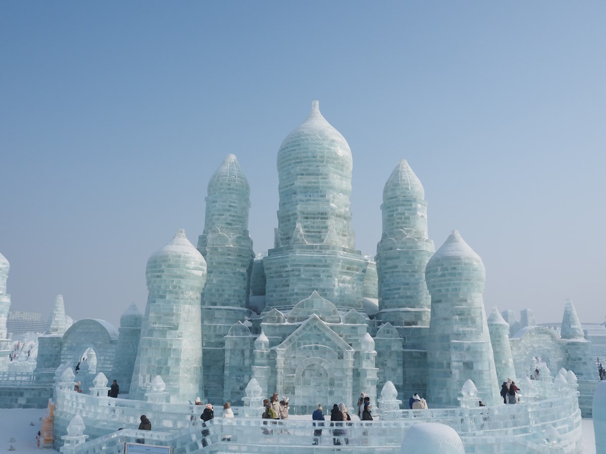
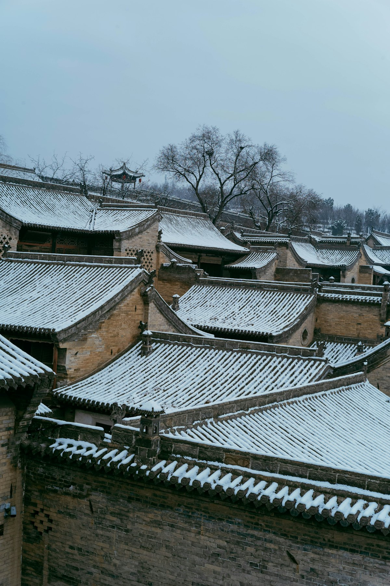
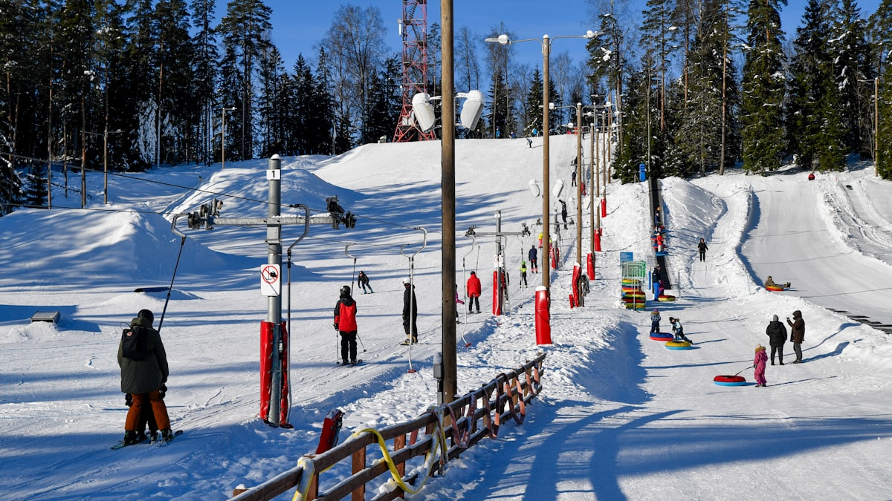
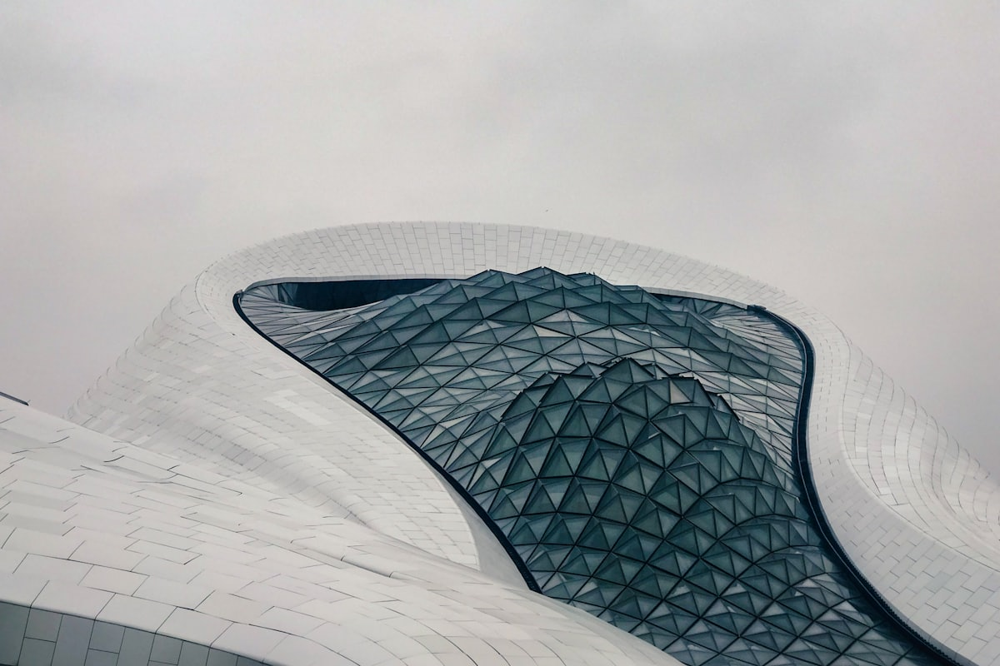
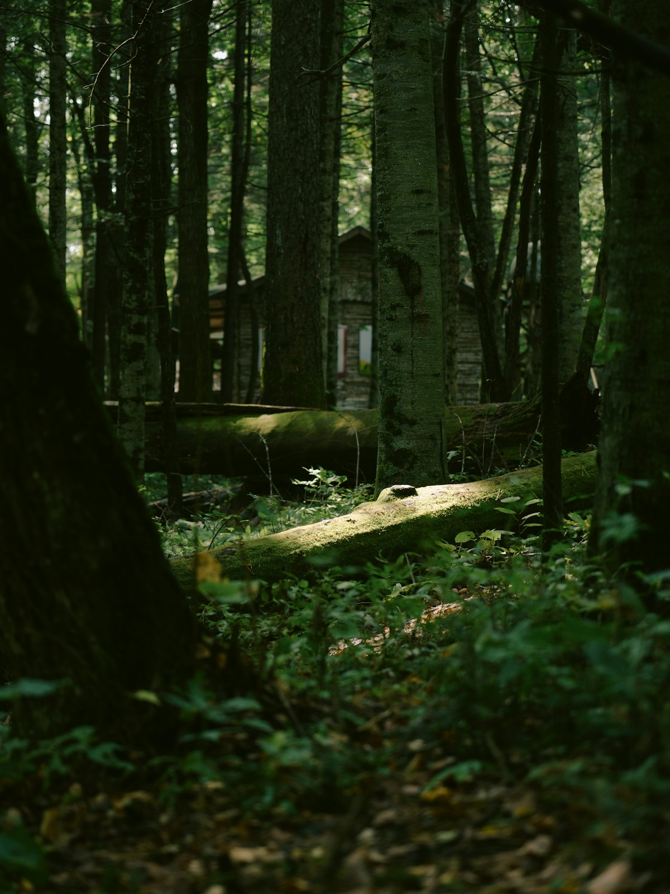
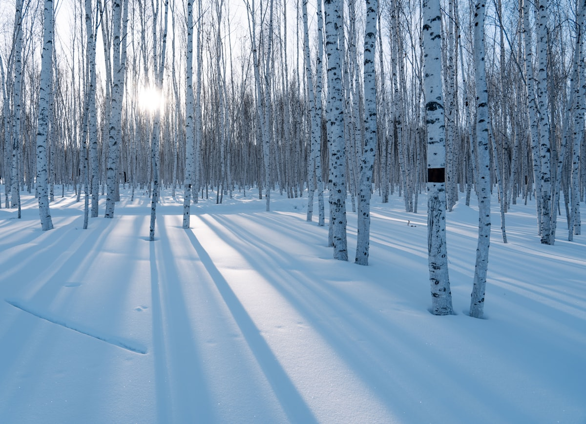

1核心结论
哈尔滨
→
亚布力
→
镜泊湖
→
漠河
→
返程
🕐 10 天怎么安排最合理
黑龙江地广人稀、线路极长（哈尔滨到漠河直线近 1000 公里），行程做成一条「冰城—雪场—湖瀑—极北」的纵深线：哈尔滨看冰雪建筑与欧陆风情，亚布力玩专业滑雪，镜泊湖看火山堰塞湖与吊水楼冬瀑，最后飞抵漠河北极村追极北与星空。节奏是「前松后紧、最后放空」。
| 事项 | 结论 |
|---|---|
| 事项 | 结论 |
| 推荐方案 | 10 天 9 晚（哈尔滨 3 晚 + 亚布力 1 晚 + 镜泊湖 2 晚 + 漠河 2 晚） |
| 返程约束 | 第 10 天从漠河直飞返程，或 D9 晚回哈尔滨 |
| 行程链 | 中央大街 → 冰雪大世界 → 亚布力 → 镜泊湖 → 北极村 |
| 预算（人均） | 经济 4200–5200 ／ 标准 6500–8200 ／ 舒适 10500–14000 |
| 三件提前事 | ① 冬季核心票（冰雪大世界/滑雪/漠河机票）提前 2 周以上订 ② 极寒装备清单提前准备 ③ 亚布力雪票与雪具分开买，看清套餐 |
| 季节提醒 | 12–2 月是冰雪黄金季；漠河 12 月气温可低至 -40℃，保暖是头等大事 |
| 交通卡 | 哈牡高铁约 1.5h；哈尔滨—漠河建议飞机（火车约 14h） |
⚠️ 两个容易忽略的点
① 哈尔滨—漠河非常远：火车要 14 小时、飞机约 1.5 小时且班次少，冬季机票经常售罄，务必提前订并留好返程余量；② 亚布力雪场分初/中/高级雪道，新手不要盲目上高级道，缆车票与雪具租赁是分开计费的。
2推荐行程 · 10 天版
以下为 10 天 9 晚的推荐节奏。冬季日短（漠河白天仅 6–7h），每段行程都按「上午重头戏」排布。
| 日期 | 行程 | 过夜地 | 主题 |
|---|---|---|---|
| D1 抵哈尔滨 | 入住中央大街附近，傍晚逛大街+吃俄餐 | 哈尔滨市区 | 冰城抵达 |
| D2 | 圣索菲亚教堂 → 中央大街 → 松花江冰雪乐园 | 哈尔滨市区 | 欧陆风情 |
| D3 | 冰雪大世界（日场+夜场）/ 太阳岛（夏季） | 哈尔滨市区 | 冰雪主题 |
| D4 | 哈尔滨 → 亚布力（高铁 1h）→ 滑雪半日 | 亚布力 | 专业滑雪 |
| D5 | 亚布力晨滑 → 高铁赴牡丹江 | 牡丹江 | 转场 |
| D6 | 镜泊湖：吊水楼瀑布 + 湖面冬捕/游船 | 镜泊湖 | 火山湖瀑 |
| D7 | 镜泊湖 → 牡丹江 → 高铁返哈尔滨 | 哈尔滨市区 | 回冰城 |
| D8 | 哈尔滨 → 漠河（飞机）→ 北极村入住 | 漠河北极村 | 极北 |
| D9 | 北极村：最北邮局 → 北极哨所 → 北字广场 → 夜晚星空 | 漠河北极村 | 找北之旅 |
| D10 返程 | 上午北极村自由活动，下午漠河机场返程 | — | 回家 |
🧭 路线可调原则
想压缩时间可把镜泊湖砍掉（牡丹江只住 1 晚），多出的 1 天留给漠河等极光/星空；夏季来访则冰雪大世界换太阳岛，漠河换大兴安岭湿地，体感 20℃ 的凉爽度假也成立。
3逐小时时间线
以下为 10 天全程的逐小时执行时间线，可当作「当天打开照着走」的清单。标注 ※ 的可选项视体力与天气取舍。
D1 · 抵达哈尔滨
冰城第一夜
🚄 抵达日
| 时间 | 事项 |
|---|---|
| 14:00–17:00 | 抵达哈尔滨（高铁/飞机），地铁 2 号线进市区 |
| 17:30–18:30 | 入住中央大街一带酒店，放下行李 |
| 19:00–21:00 | 中央大街夜游（免费）：方石路、俄式面包石街道，吃一根马迭尔冰棍（冬季也卖） |
| 21:00 | 回酒店，明天看教堂与江景 |
中央大街是亚洲最长的步行街之一，两侧俄式老建筑林立；冬季路面滑，穿防滑保暖鞋。
D2 · 圣索菲亚 + 中央大街 + 松花江
欧陆风情一日
🏛 城市日
| 时间 | 事项 |
|---|---|
| 08:30–10:00 | 圣索菲亚大教堂（外观免费，入内参考价 20 元）：洋葱头穹顶，哈尔滨地标 |
| 10:30–12:30 | 中央大街白昼版：华梅西餐厅/老昌春饼午餐，买秋林红肠、大列巴 |
| 13:00–16:00 | 松花江冰雪乐园（冬季参考价 50 元起）：冰滑梯、冰上自行车；夏季则为江上轮渡 |
| 16:30–18:00 | 防洪纪念塔 → 斯大林公园散步 |
| 18:30–20:30 | 晚餐：东北铁锅炖 / 俄式西餐 |
圣索菲亚教堂冬季傍晚亮灯后最出片，可先白天看外观、傍晚再来补夜景。
D3 · 冰雪大世界
冰雪主题日
❄️ 冰雪日
| 时间 | 事项 |
|---|---|
| 08:30–10:30 | 补眠或逛果戈里大街（免费）：俄式老建筑街区，小众人少 |
| 11:00–13:00 | 午餐后出发，前往冰雪大世界园区（参考价 280 元起） |
| 14:00–16:30 | 冰雪大世界日场：冰雕冰建筑，日落前光线最美 |
| 16:30–20:00 | 夜场灯光秀：冰滑梯、摩天轮（旺季排队久，建议买快速通道） |
| 20:30 | 回市区晚餐，明日赴亚布力 |
冰雪大世界只在 12 月下旬–2 月开放；园区内极冷，暖宝宝、充电宝必备（低温掉电快）。夏季替代：太阳岛风景区（参考价 30 元）。
D4 · 哈尔滨 → 亚布力 · 滑雪
专业滑雪日
⛷ 雪场日
| 时间 | 事项 |
|---|---|
| 07:30–08:30 | 高铁哈尔滨→亚布力西（约 1h，二等座约 100 元） |
| 09:00–12:00 | 亚布力滑雪旅游度假区（雪票+雪具参考价 200–400 元/天）：新手选初级道，教练可现请 |
| 12:30–13:30 | 雪场餐厅午餐（或自带） |
| 14:00–16:30 | 继续滑雪或乘缆车上山顶看林海雪原 |
| 17:30 | 入住亚布力酒店，泡个温泉（可选） |
亚布力是中国最大滑雪场集群之一，曾办冬亚会；滑雪装备可到雪场租赁，但手套、护目镜建议自带，雪票套餐要看是否含雪具。
D5 · 亚布力 → 牡丹江
转场日
🚄 转场日
| 时间 | 事项 |
|---|---|
| 08:00–10:30 | 亚布力晨滑或雪场休闲 |
| 11:00–12:00 | 高铁亚布力→牡丹江（约 1h，二等座约 90 元） |
| 12:30–13:30 | 午餐：牡丹江特色（炖江鱼/东北菜） |
| 14:30–17:00 | 牡丹江市内：八女投江纪念碑、牡丹江江畔散步 |
| 18:00 | 入住，明日赴镜泊湖 |
牡丹江是进入镜泊湖的中转站，市区不大半天可逛完；也可直接住到镜泊湖景区门口（车程约 1h）。
D6 · 镜泊湖 · 吊水楼瀑布
火山湖瀑一日
🏞 湖瀑日
| 时间 | 事项 |
|---|---|
| 08:00–09:00 | 牡丹江 → 镜泊湖景区（大巴约 1h） |
| 09:00–12:00 | 吊水楼瀑布（景区参考价 100 元）：中国最大火山堰塞湖瀑布，冬季瀑布冻结成冰瀑，壮观 |
| 12:30–13:30 | 景区内午餐 |
| 14:00–17:00 | 镜泊湖游湖（船票参考价 80 元）或冬季湖面冬捕/冰上活动 |
| 18:00 | 入住镜泊湖景区酒店 |
吊水楼瀑布冬季结成高 20 余米的冰瀑，是冬季镜泊湖的招牌景观；冬捕需提前确认当年活动日期。
D7 · 镜泊湖 → 哈尔滨
回冰城
🚄 转场日
| 时间 | 事项 |
|---|---|
| 08:30–11:30 | 镜泊湖晨景自由活动（可选：火山口森林公园） |
| 12:00–13:00 | 返回牡丹江午餐 |
| 13:30–15:00 | 高铁牡丹江→哈尔滨（约 1.5h，二等座约 120 元） |
| 16:00–18:00 | 入住哈尔滨，补买东北特产 |
| 19:00 | 晚餐，准备明日飞漠河 |
哈牡高铁通车后牡丹江到哈尔滨仅约 1.5h，安排十分从容；红肠、大列巴、冻梨干是必带伴手礼。
D8 · 哈尔滨 → 漠河 · 北极村
飞向极北
✈️ 极北日
| 时间 | 事项 |
|---|---|
| 08:00–10:00 | 哈尔滨太平机场 → 漠河古莲机场（约 1.5h，参考价 800–1500 元） |
| 10:30–12:00 | 机场 → 北极村（大巴约 1.5h） |
| 12:30–13:30 | 北极村午餐：驯鹿肉/江鱼等大兴安岭风味 |
| 14:00–17:00 | 北极村初探（门票参考价 60 元）：北字广场、村内木屋 |
| 18:00–21:00 | 傍晚到夜间观星/追极光（冬季极光小概率，但星空极震撼） |
漠河是中国最北县级市，北极村是中国最北的村落；冬季气温低至 -40℃，室外停留必须全副武装，手机贴暖宝防冻关机。
D9 · 北极村 · 找北之旅
极北深度日
🧭 找北日
| 时间 | 事项 |
|---|---|
| 08:30–10:30 | 最北邮局：寄一张「最北明信片」（参考价 10 元起） |
| 10:30–12:30 | 北极哨所（外观）：中国最北哨所，隔江望俄罗斯 |
| 13:00–15:00 | 神州北极广场 → 北字广场：寻找各种「北」字石刻，打卡北纬 53° |
| 15:30–17:00 | 北极村木屋村落漫步，看雪蘑菇与狗拉雪橇（参考价 80 元） |
| 19:00 | 晚餐后如有兴趣再看一夜星空 |
北极村夏季为极昼、冬季极夜短昼，夏至前后可「看极昼」，冬至前后白天仅 6 小时，行程安排要适配日照。
D10 · 返程
从祖国最北回家
✈️ 返程日
| 时间 | 事项 |
|---|---|
| 08:30–10:30 | 自由活动：北极村晨景，购买大兴安岭特产（蓝莓干、木耳、松子） |
| 10:30–12:30 | 退房，大巴返回漠河市区 |
| 13:00–15:00 | 漠河机场值机，返程 |
| 17:00 | 抵达出发地，结束黑龙江 10 天行程；冬季注意保暖，羽绒服收好 |
漠河直飞大城市班次有限，旺季常需经哈尔滨/沈阳中转，买票时注意联程时间别赶太紧。
4景点图鉴
必去（必去）/ 顺路（顺路）/ 可跳过（可跳过）。
必去
圣索菲亚大教堂 外观免费/入内参考价 20 元
哈尔滨地标。拜占庭式洋葱头穹顶，雪夜灯火下宛如童话。

必去中央大街 免费
亚洲最长步行街。方石路面 + 俄式建筑，马迭尔冰棍、老昌春饼。
 必去
必去冰雪大世界 参考价 280 元起
世界最大冰雪主题乐园。冰雕建筑 + 冰滑梯 + 灯光秀，冬季限定。

必去亚布力滑雪场 参考价 200–400 元/天
中国最大滑雪场集群。初/中/高级道全覆盖，曾办冬亚会。

必去吊水楼瀑布 含景区参考价 100 元
中国最大火山堰塞湖瀑布。冬季冻结成 20 米冰瀑，东北奇观。

顺路镜泊湖 游船参考价 80 元
火山堰塞湖。湖光山色/冬季冬捕，北国湖泊名片。

必去漠河北极村 参考价 60 元
中国最北村落。北极哨所 + 最北邮局 + 北纬 53°，找北之旅。

可跳过大兴安岭白桦林 免费/观景台参考价 30 元
纯白雪原上的白桦林。雪后摄影天堂，顺路加一个观景点。
图片为 Unsplash 主题图（冰雪教堂、雪街、滑雪、冰瀑、北极村庄主题），用于页面配图。更多免费好去处：果戈里大街、松花江畔、牡丹江江滨。
5路线地图
点击左侧节点可在地图上定位；点击地图 marker 会高亮对应节点。坐标为 WGS-84 转 GCJ-02 纠偏后标注。
6预算明细（三档）
以下为单人、不含购物的估算；门票为参考价，以现场为准。往返交通按高铁/飞机从华北出发，漠河段几乎必乘飞机（火车约 14h）。
| 项目 | 经济（4200–5200） | 标准（6500–8200） | 舒适（10500–14000） |
|---|---|---|---|
| 往返交通 | 高铁约 1100–1400 | 高铁/飞机约 1800–2800 | 飞机+接送约 3000–4500 |
| 漠河段 | 火车卧铺约 500–600 | 飞机单程约 800–1500 | 飞机+专车约 2000–3000 |
| 住宿（9 晚） | 青旅/快捷 900–1400 | 连锁/雪场酒店 2200–3200 | 度假村+民宿高端 5000–7500 |
| 门票+雪票 | 基础约 400 | 含冰雪大世界+雪票约 700 | 全含+快速通道约 1200 |
| 餐饮（10 天） | 700–900 | 1400–1800 | 2300–3000 |
| 市内交通 | 公交+地铁 150–200 | 地铁+打车 300–450 | 打车/包车 600–1000 |
💰 标准档示例账单（人均约 7200 元）
往返高铁 2400 + 漠河机票 1400 + 住宿 9 晚 2600（双人分）+ 门票雪票 700 + 餐饮 1600 + 市内交通 400 ≈ 7100 元。主要浮动项是冰雪大世界旺季票价与亚布力雪票套餐。
7备选方案
7.1 只看精华的 6 天版
- D1 哈尔滨中央大街+圣索菲亚
- D2 冰雪大世界
- D3 亚布力滑雪
- D4 镜泊湖吊水楼冰瀑
- D5 回哈尔滨买特产
- D6 返程
7.2 夏季清凉版
6–8 月哈尔滨 20℃ 出头、太阳岛+伏尔加庄园清凉度假；亚布力变避暑森林氧吧；镜泊湖游船看绿意；漠河可看极昼与大兴安岭湿地。冰雪大世界无开放，门票预算整体降 30%。
7.3 极北深度版
把漠河延到 3–4 天：加访龙江第一湾、北极村周边驯鹿部落、乌苏里浅滩「中国最北点」；追极光需看 KP 指数与晴朗夜空，冬季成功率高但也看运气。
8交通与住宿
8.1 黑龙江 ⇄ 各地 交通
| 方式 | 时长 | 参考价 | 备注 |
|---|---|---|---|
| 高铁（推荐） | 北京→哈尔滨 5–6h | 二等座 500–600 元 | 哈西站，地铁进城 |
| 飞机 | 北上广深直达哈尔滨 2–4h | 500–1800 元 | 太平机场，机场大巴进城 |
| 哈—漠河 | 飞机 1.5h / 火车约 14h | 800–1500 元 / 卧铺 400–600 元 | 冬季机票紧张，务必提前订 |
| 省际大巴 | 沈阳/长春→哈尔滨 4–6h | 150–250 元 | 长途大巴耗时，备选 |
⚠️ 省内交通核心提醒
哈牡高铁（哈尔滨—牡丹江）约 1.5h、亚布力站中途下即可；哈尔滨—漠河是省内最远一段，火车近 14h 太耗时，建议飞机并提前订票；北极村距漠河机场约 80km，需大巴/包车。
8.2 省内城市交通
- 哈尔滨地铁：1/2/3 号线，机场有 2 号线直达市区
- 亚布力：高铁站到雪场有免费摆渡车（旺季）
- 牡丹江：市区公交+出租车，去镜泊湖有景区大巴
- 漠河：机场—市区—北极村靠大巴/包车
- 哈尔滨市内：中央大街一带步行即可，松花江两岸乘轮渡
8.3 住宿区域推荐
| 区域 | 价格/晚 | 优点 | 短板 |
|---|---|---|---|
| 哈尔滨中央大街 | 快捷 300–500 / 星级 700–1500 | 核心景区步行可达 | 冬季热门，提前订 |
| 亚布力滑雪区 | 雪场酒店 600–1500 | 出门即雪道 | 雪季紧俏溢价 |
| 牡丹江/镜泊湖 | 快捷 250–400 / 湖边民宿 400–800 | 中转便宜，湖边景观好 | 偏安静，配套一般 |
| 漠河北极村 | 民宿 300–700（火炕特色） | 最北体验、夜观星空 | 供暖看民宿，慎选低价房 |
9美食清单
🍖 东北硬菜
- 铁锅炖（大鹅/排骨/鱼）
- 锅包肉（黑龙江发源）
- 杀猪菜、血肠
- 冻梨、冻柿子（东北冬天的快乐）
🍲 大兴安岭风味
- 蓝莓干、野生木耳
- 森林蘑菇炖小鸡
- 驯鹿肉（北极村限定）
- 江鱼（镜泊湖/黑龙江冷水鱼）
🥖 哈尔滨必吃
- 马迭尔冰棍（中央大街）
- 华梅西餐厅俄式西餐
- 秋林红肠、大列巴
- 冰糖葫芦（冬季街头）
📍 去哪吃
- 哈尔滨中央大街商圈
- 哈尔滨道外老街区
- 亚布力雪场餐厅
- 北极村农家乐
⚠️ 美食防坑
① 马迭尔冰棍认准中央大街老店；② 冰雪大世界园区内餐饮贵且冷，建议自带保温壶+暖食；③ 漠河食材多靠外运，餐厅菜价偏高，点餐时看清份量，东北菜量大不要贪多。
10出行贴士
10.1 行前清单
- 身份证、充电宝（低温掉电快）
- 极寒羽绒服+防风层+保暖内衣（-40℃ 需三级穿搭）
- 防滑雪地靴、手套、帽子、围巾
- 暖宝宝、保温杯、护目镜/滑雪镜
- 冰雪大世界/滑雪票提前 2 周订
- 漠河机票提前订并留返程余量
- 关注漠河实时气温与航班动态
- 手机备用电池+下载离线地图（漠河信号弱）
10.2 防踩坑
🧳 四条提醒
① 漠河极寒：室外停留不超过 30–40 分钟，间歇进室内回温；② 冰雪大世界夜场排队久，优先线上预约；③ 滑雪安全第一，新手请教练、量力而行；④ 冬季黑龙江日落早（16 点前后），下午行程尽早排。
🌟 一句话总结
黑龙江是一场「从冰城到极北的冰雪远征」——哈尔滨的欧陆风情、亚布力的雪板飞扬、镜泊湖的冰瀑如画、漠河的极北星空，10 天刚好把中国最北的浪漫走完。极寒是天敌也是滤镜，装备到位，处处都是出片的雪国。